Habitat of
Foothill Yellow-Legged Frogs
Ryan Peek | 2023-05-09
Elkhorn Slough CTP
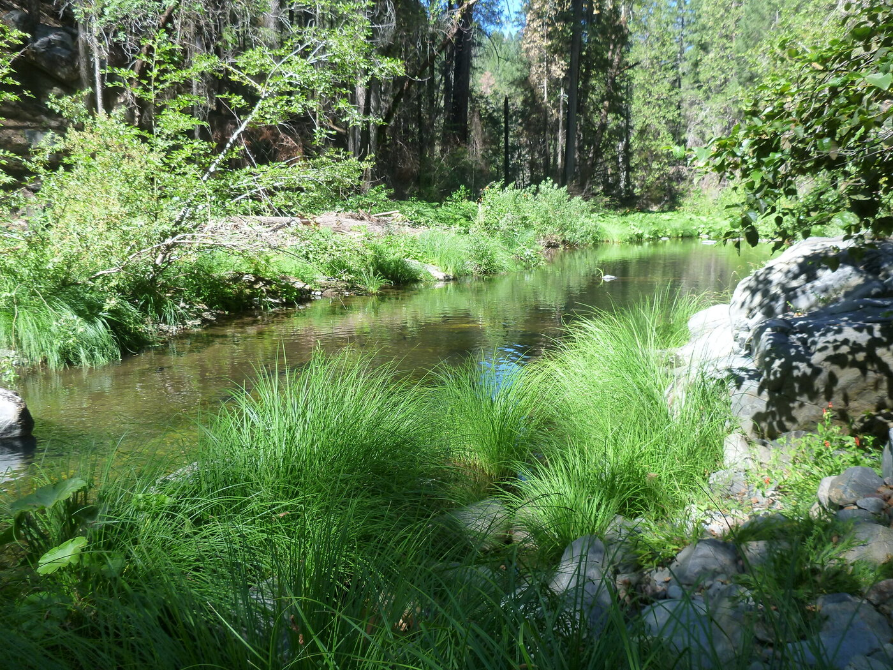 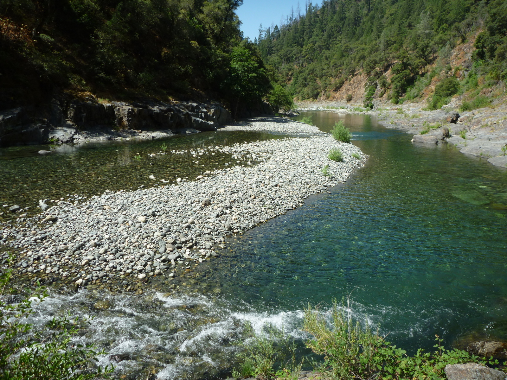 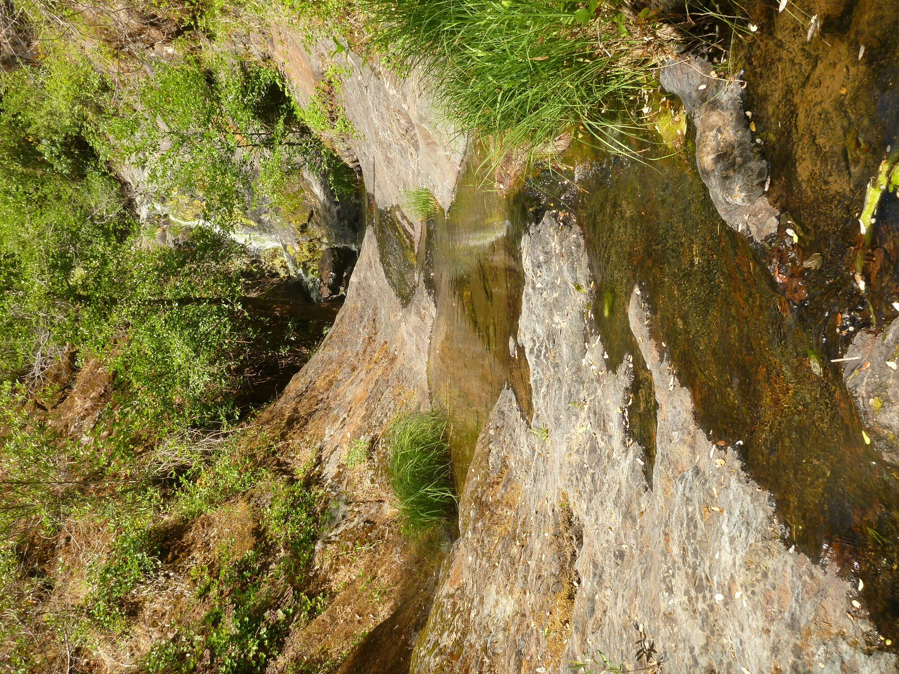
Rana boylii Habitat
Rana boylii Habitat
- Habitat Characteristics
- Microhabitat | Mesohabitat | Reach-scale | Heterogeneity
- Life Stage Hydrologic Requirements
- Breeding (flow & temp cues) | Rearing (food & flow)
- Regulated River Impacts
- Altered flow regimes on early lifestages
- Case Study: Tuolumne
Microhabitat
Physical habitat variables measured at each frog
- Quantitative: local velocity, depth, channel width
- Categorical: dominant substrate, cover, geomorphic unit, hydraulic unit, reach type, riparian type

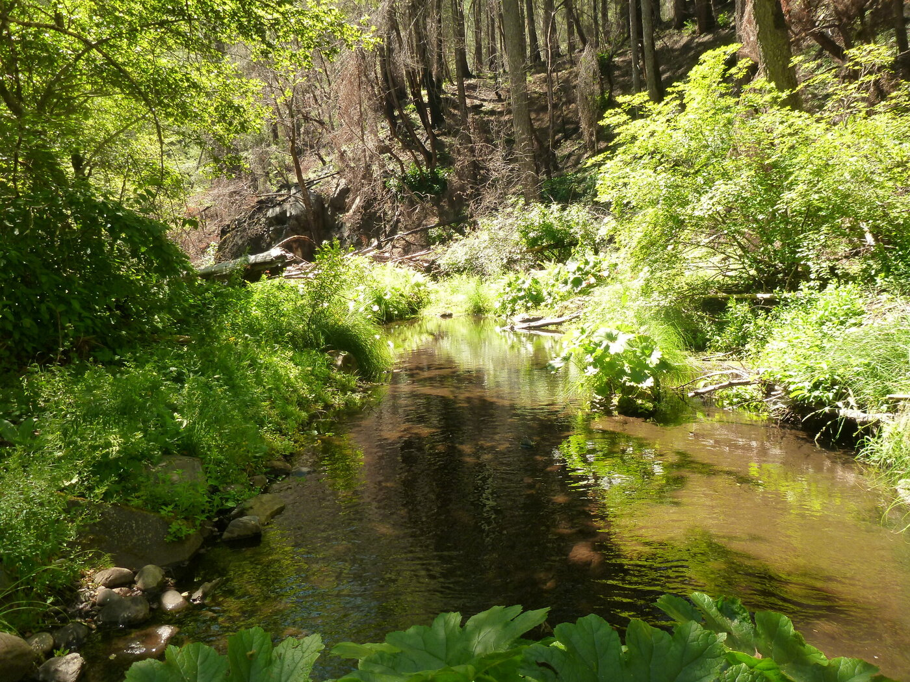
Microhabitat
Microhabitat Associations
- While RABO use a wide array of habitat, local hydraulic conditions are main physical control on breeding and rearing habitat
- Egg and tadpoles are susceptible to scour / dessication from high velocities or stage drops
- Predictability and variability (heterogeneity) are important
Microhabitat
Habitat Suitability Criteria
Use vs. Available habitat clearly shows preference for low-velocity/depth
90% of eggs observed in Sierras were in shallow, sheltered waters (n=147) (Bondi et al. 2013)
- < 0.67 m total depth
- < 0.15 m/s velocity
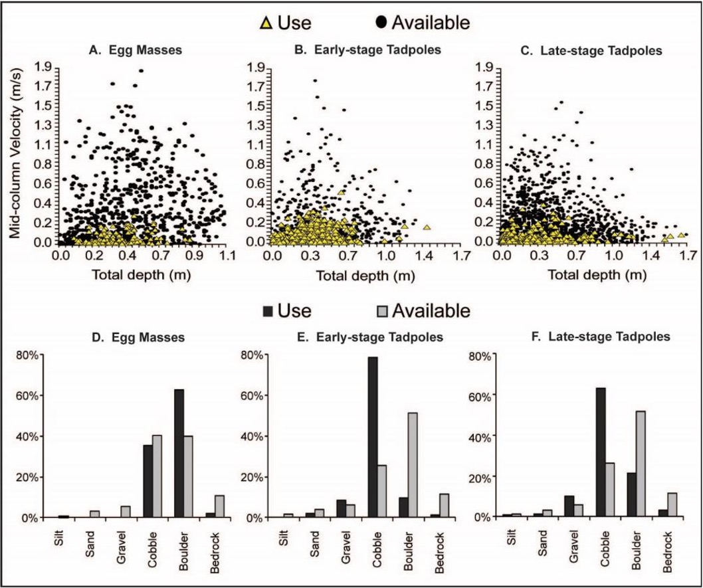
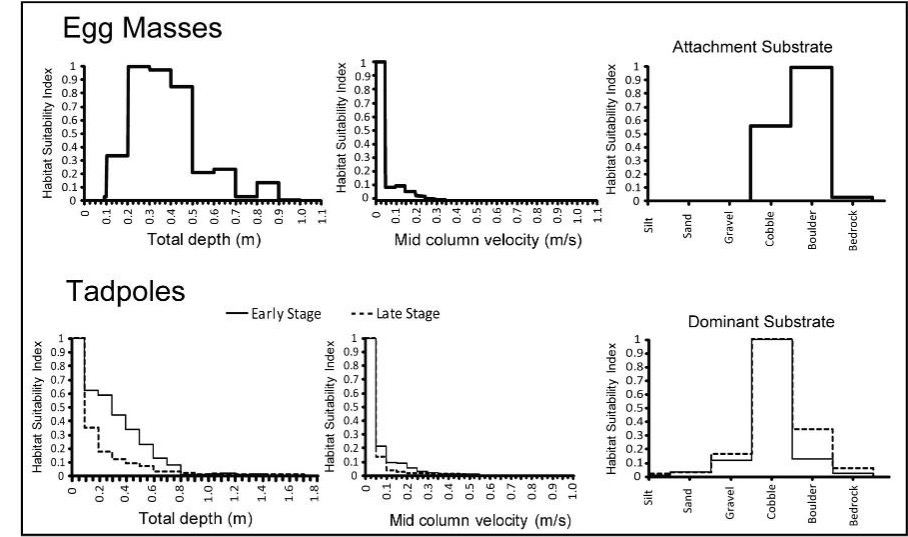
Microhabitat
Mesohabitat Use
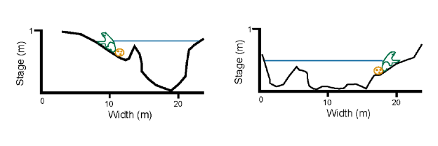Low survival site
(low width:depth ratio)
High survival site
(large width:depth ratio)
Modified from S.Kupferberg, 1996
Mesohabitat Use
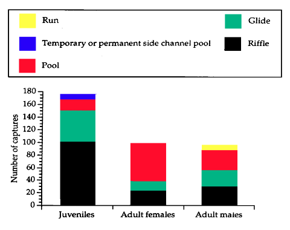- As conditions shift seasonally, so do life stages and channel habitat use (Van Wagner 1996)
Van Wagner 1996
Reach Scale: Channel Shapes
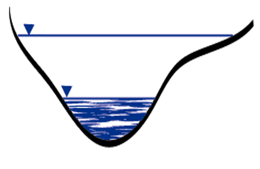
- Breeding typically in wide shallow cross sections in larger stream
- Associations different by stream order, region, and hydrology
Yarnell 2000
Channel varies
by Stream Order
Breeding
Habitat
Details
Egg Mass Hydrologic Habitat
- Egg Mass Water Depths:
- 10–13 cm (Fitch 1936)
- 7–22 cm (Fuller & Lind 1992)
- 4–43 cm (Kupferberg 1996 & 1997)
- 6–28 cm (Van Wagner 1996)
- 6–40 cm (Lind 2005)
- > 2m! (Peek, pers. obs. 2017)
- 90% found in 14–67 cm in Sierras (Yarnell et al. 2011)
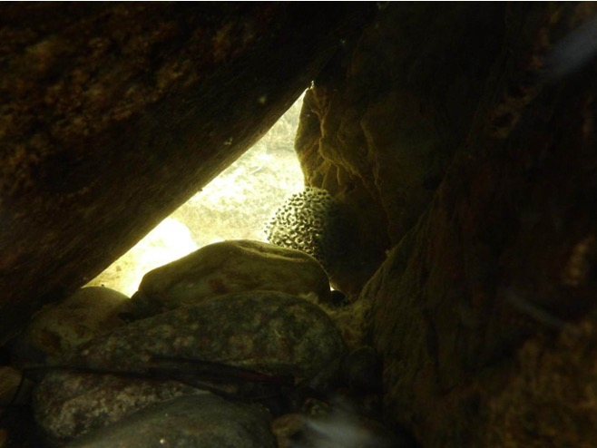
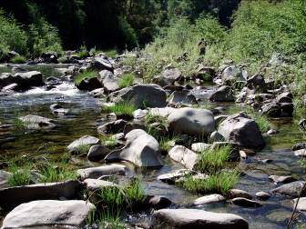
Breeding
Egg Mass Hydrologic Habitat
- Egg Mass Water Velocities:
- 0.0–0.06 m/s (Fuller and Lind 1992)
- 0.01–0.14 m/s (Kupferberg 1996 & 1997)
- 0.0–0.03 m/s (Van Wagner 1996)
- 0.00–0.21 m/s (Lind 2005)
- 0.04–0.17 m/s (Wheeler and Welsh 2008)
- Eggs: 90% found in 0.00–0.15 m/s (Yarnell et al. 2011)
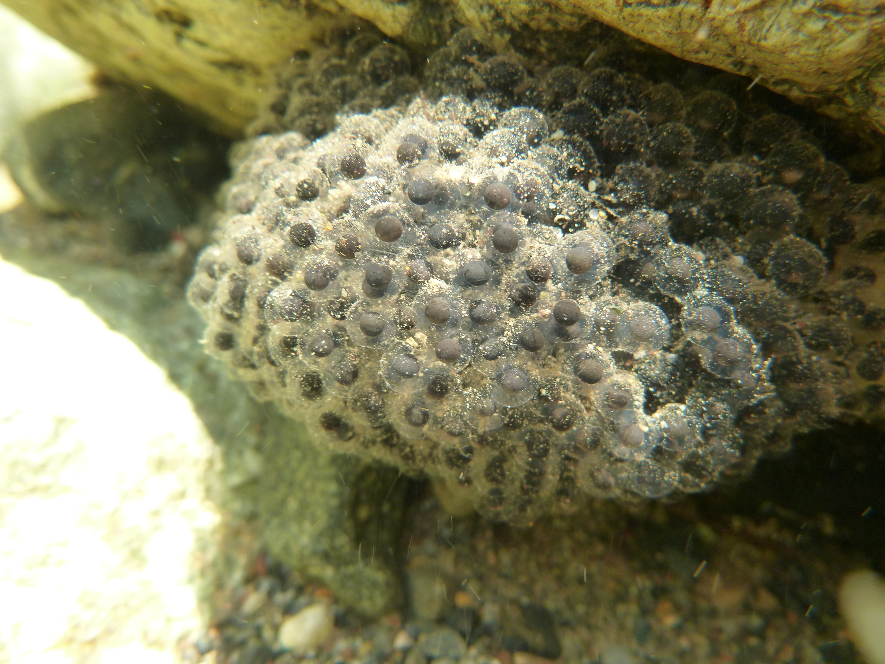
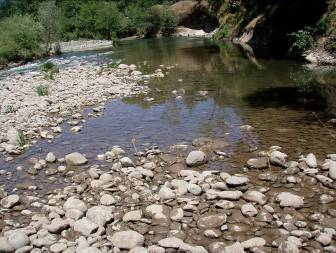
Breeding
Tadpole Hydrologic Habitat
Depths
- Early Stage Tadpoles (90% within): 1–54 cm
- Late Stage Tadpoles (90% within): 1–51 cm (Yarnell et al. 2011)
Velocities
- Early Stage Tadpoles (90% within): 0.00–0.16 m/s
- Late Stage Tadpoles (90% within): 0.00–0.12 m/s (Yarnell et al. 2011)
- Critical velocities ranged from 0.01–0.04 m/s depending on developmental state, body size, and population of origin (Kupferberg et al. 2009)
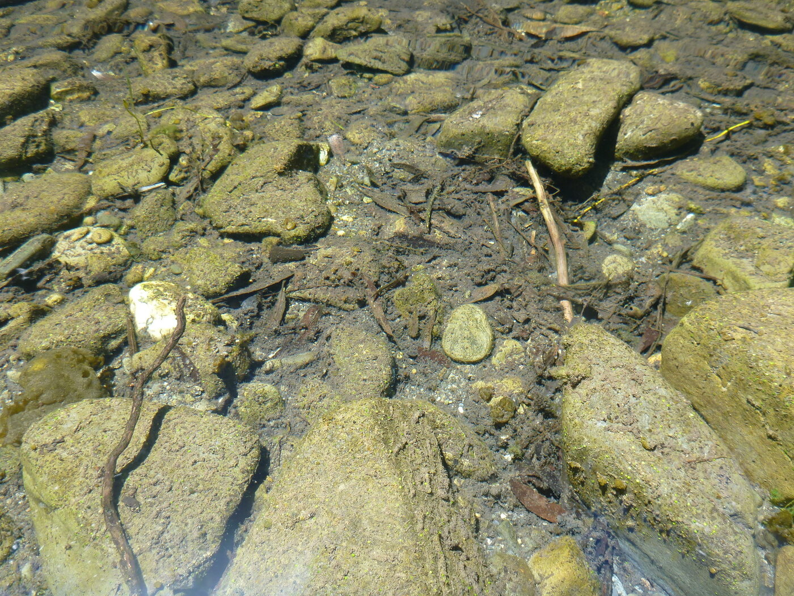
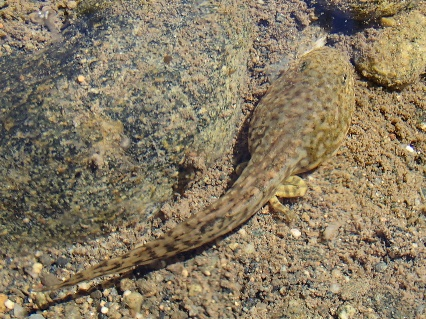
Rearing
Adult Habitat
- Most common along pool, glide, or riffles (Lind and Yarnell 2008, Bourque 2008, Haggarty 2006, Yarnell 2005, Van Wagner 1996, Lind 2005)
- Near stream cover may include wide array from shoreline rocks (especially cobble), to leaf litter, or overhanging vegetation [e.g. Carex sp.] (Bourque 2008, Haggarty 2006, Yarnell 2005, Hayes and Jennings 1988, Van Wagner 1996)
- Adults may prefer some riparian overhanging vegetation (e.g. Carex sp.) with moderate shade (Van Wagner 1996, Zweifel 1955, Moyle 1973, Hayes and Jennings 1988)
So pretty much all the possibilities!
Adults
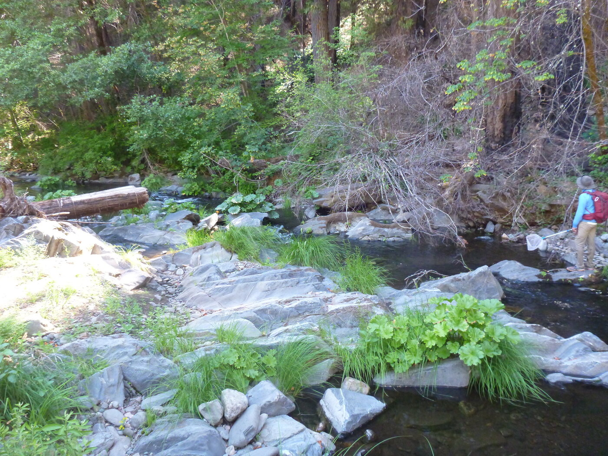
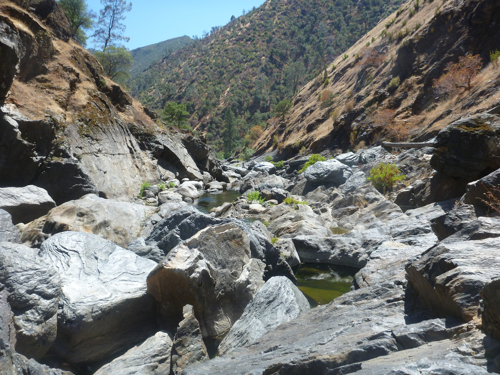
- Can use a very wide range of habitat
- From small intermittent first order tribs to large rivers
Adult Habitat
Overwintering Habitat
- Very little data are available relating to overwintering habitat
- Van Wagner (1996) observed R. boylii both in the water and along the stream-edge habitat beneath rocks, leaf litter, and Carex spp
- Also found frogs appeared to be active whenever ambient conditions were favorable
- Habitat use in large rivers may vary, juveniles & adults may move into smaller lateral tributaries to avoid risk of scouring (Kupferberg 1996)
- Or move into adjacent terrestrial habitat to avoid winter flood events altogether.
Overwintering
Reach Heterogeneity
- Compared 10 study reaches, Shannons Diversity Index key predictor of frog abundance (Yarnell 2008)
- Habitat diversity within a reach matters
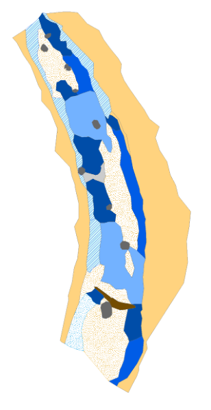
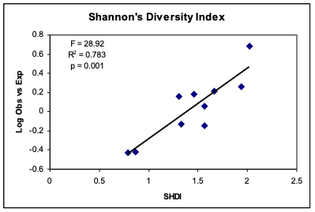
Network Heterogeneity
Network Heterogeneity
- Not only does the diversity of habitats within a reach matter, but the location of the reach within the stream network matters.
- Frogs occur closer to confluences than random or “expected” (Peek 2010)
- Confluences are known to have higher diversity of habitats and create refugia
Habitat Summary
- Different life stages require different hydraulic and substrate conditions
- Hydraulic and substrate conditions characterize mesohabitats (e.g., geomorphic units like riffles, pools)
- Certain reach types, differentiated by higher diversity of geomorphic units, are preferred by life stages
- Reaches near tributaries are often preferred because structurally more diverse & provide refugia
Hydrology for Frogs
Quantifying
the Sierra
Spring Recession
Quantifying the Sierra Spring Recession
2011
2012
Recession Rates

- In RABO breeding areas, recession rates are typically 30cm per 3 weeks (~10 cm a week)
- This is consistent across water years
- Thus stage change is consistent, matches natural history observations of depth/velocity (hatching timing ~2-3 weeks to hatch out)
Dams change flow patterns
Lytle and Poff 2004
Type of flow alteration plays a big role
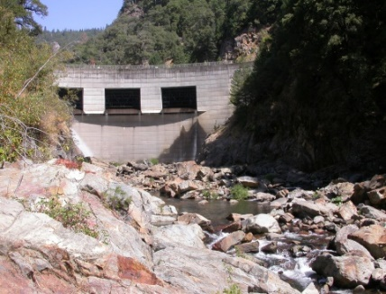
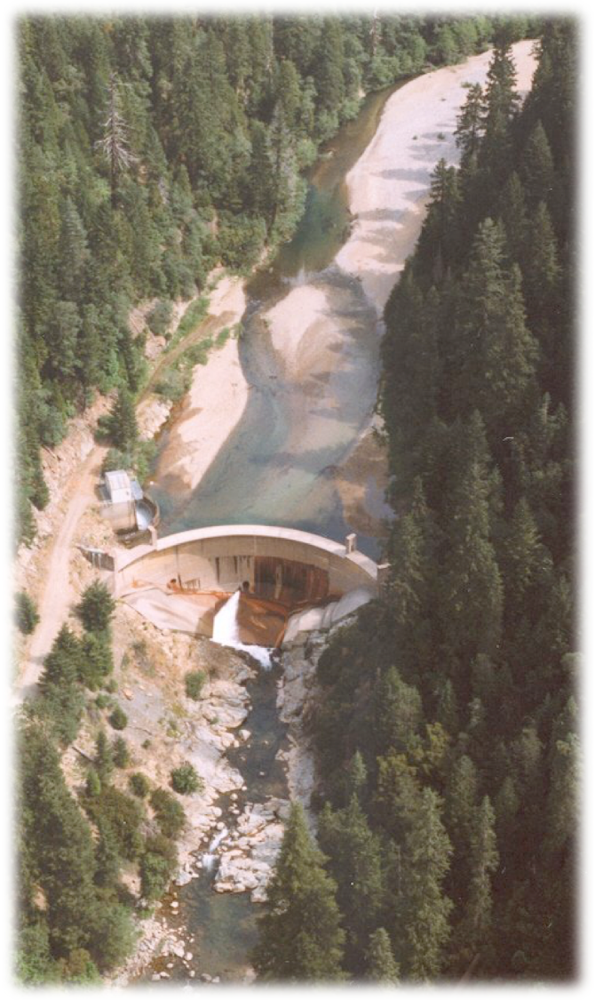